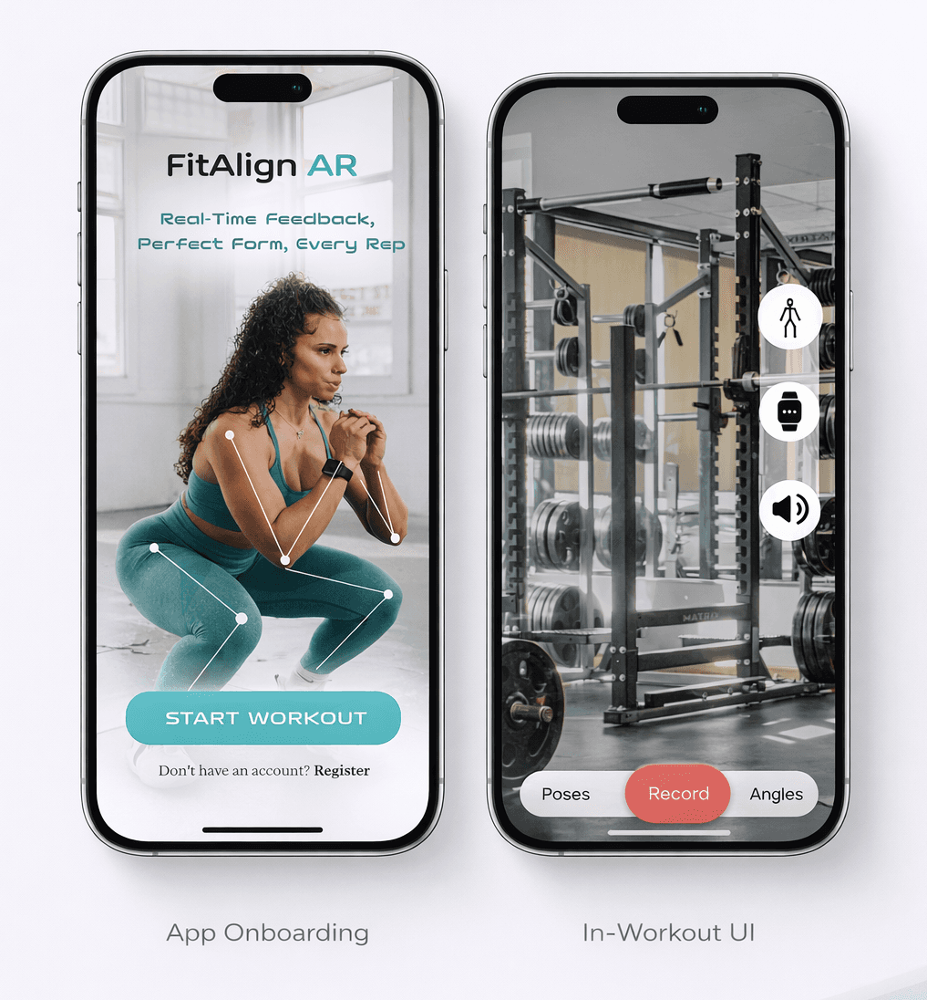
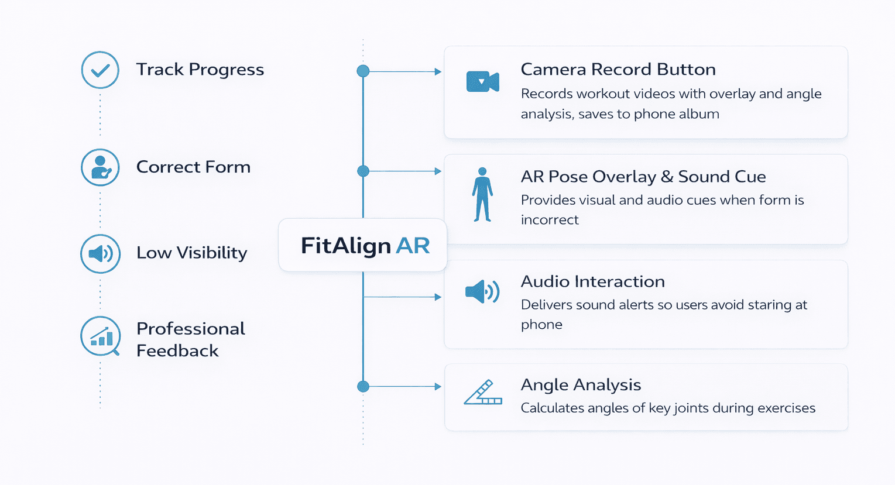

FitAlign AR
AR fitness app designed to support and maintain proper workout form
An app that uses AI-powered pose detection to provide real-time workout form correction, reducing injury risk and improving training efficiency. With progress tracking, personalized feedback, and multimodal feedback through sound and visual cues, it offers an accessible and engaging fitness experience for all users.
Context
Problem Space: Learning and maintaining proper workout form is a significant challenge for beginners and remains critical for individuals at all fitness levels. Correct form is essential not only for effective workouts but also for injury prevention. Despite its importance, many people struggle with form due to a lack of accessible guidance, real-time feedback, or confidence in their ability to self-correct.
Goal: Develop solutions that empower users to learn, correct, and maintain proper workout form, fostering confidence, reducing injury risk, and improving gym experiences for people of all fitness levels.

Research
Survey and Interview Insights:
- Form uncertainty creates barriers for beginners
- Inconsistency may stem from lack of accountability and visible progress
- Social anxiety around filming limits some users' ability to track form
Quotes:
"I get really self-conscious at the gym because I'm not sure if I'm doing certain exercises properly. I worry that people are watching me and judging my form."
"I feel too busy to go to the gym, so I'm really inconsistent with building muscle. Without a coach, my workouts feel less efficient, and I can't really see if I'm making progress or not."
"I want to film myself to check my form, but I feel awkward setting up my camera in the gym. Plus, I'm worried about other people being in the background of my videos—it feels like an invasion of their privacy."
Design
FitAlign AR provides users with real-time workout guidance through AR-based pose tracking, audio feedback, and performance recording. The app is designed around four core user needs: tracking and reviewing workout progress, maintaining correct exercise form, minimizing social visibility in gym environments, and accessing analytical, professional-level feedback to support safe and effective training.

Implementation
Real-time pose detection with noise reduction
The system processes on-device pose landmarks (via Google ML Kit) in real time and applies temporal smoothing to mitigate jitter in high-frequency pose signals.
Angle-based form analysis
Joint angles are computed using trigonometric vector calculations and evaluated with rule-based logic derived from exercise biomechanics, enabling interpretable and controllable form assessment.
Multimodal feedback coupling
Visual feedback remains continuously responsive, while audio coaching (AVFoundation) is discretely gated and delivered only when incorrect form persists, balancing responsiveness with cognitive load.